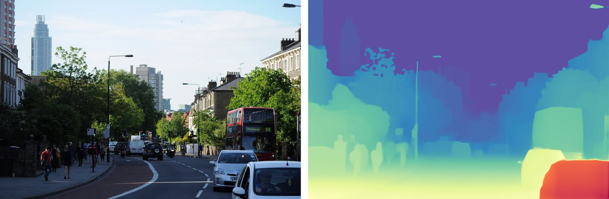
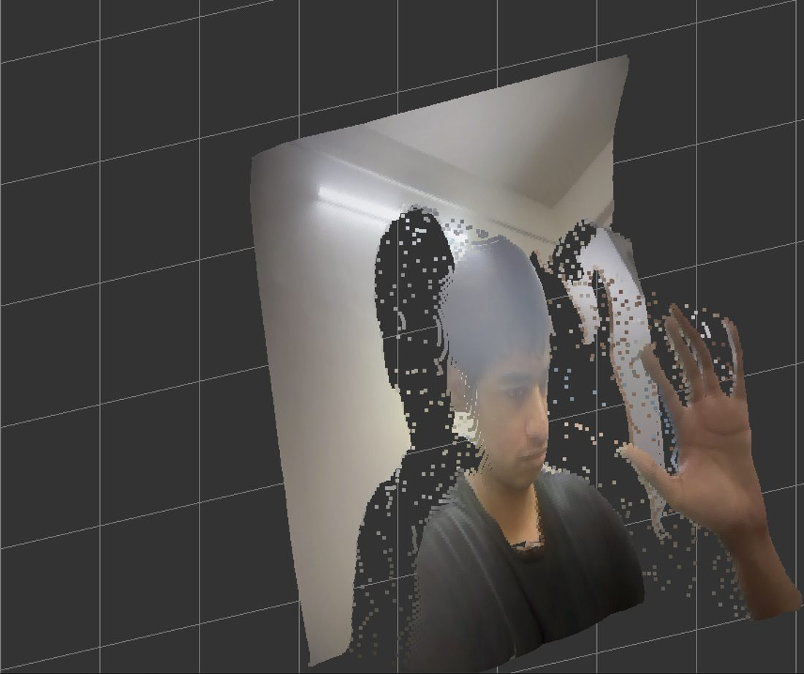
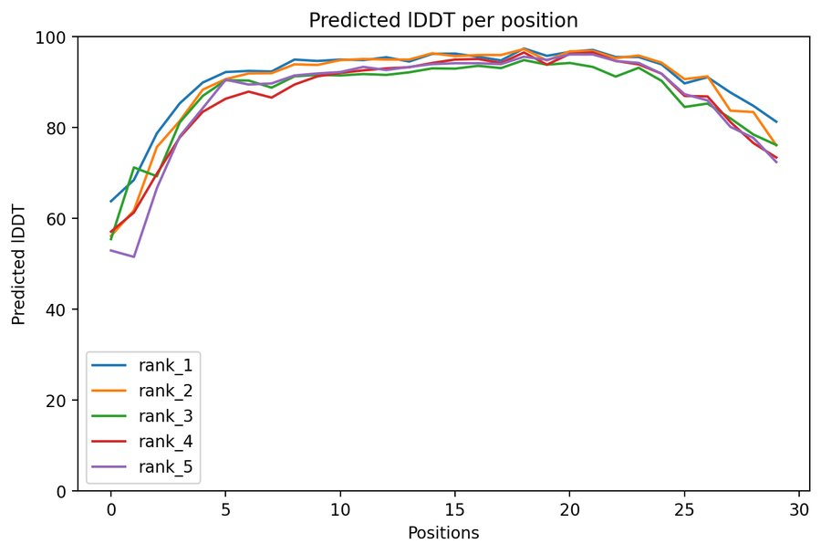
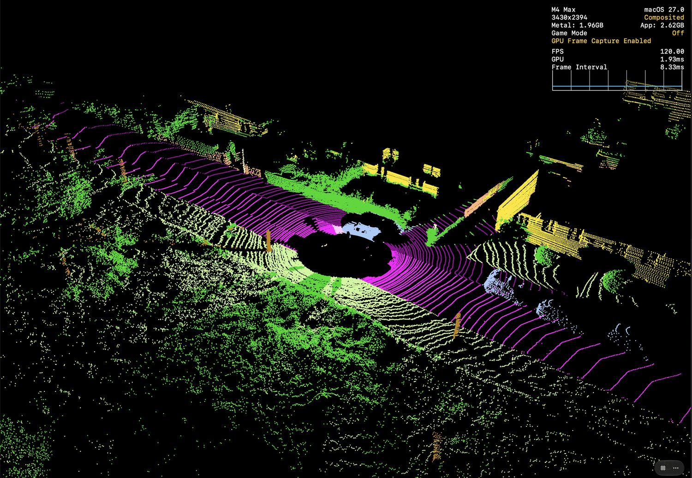
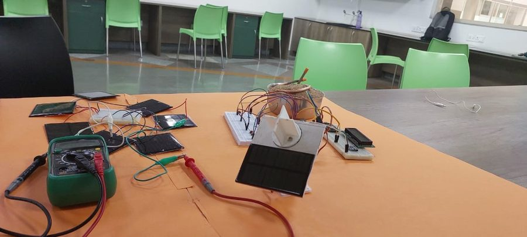

Everything here runs on Apple Silicon and most of it is built from scratch in C++, Objective-C++ and Metal: a tensor library with automatic differentiation, ports of computer vision models to the GPU, and a LiDAR pipeline for autonomous driving.
Every operation has a CPU path and a Metal GPU path. Writing an expression only builds a graph. Nothing is computed until you ask for a result, so the same graph can be compiled once and run on either device.
matrix x = matrix::rand({4}); // a leaf: no math yet
matrix a = x * x; // each line adds a node
matrix s = matrix::sin(a);
matrix f = s * matrix::exp(x);
f.eval(); // now the graph runs, on CPU or Metal
auto f = [](matrix x) { return matrix::sin(x * x) * matrix::exp(x); }; auto df = matrix::grad_gpu(f, x); // builds a new graph matrix g = df(x); // same lazy machinery
class SinPrimitive : public Primitive { // ...eval_cpu / eval_metal... std::vector<matrix> vjp(matrix& grad_out) override { return { grad_out * matrix::cos(input) }; // d/dx sin(x) = cos(x) } matrix jvp(std::vector<matrix>& tangents) override { return tangents[0] * matrix::cos(input); // forward mode } };
The particle demo builds a 200×200×200 grid of randomly coloured points as tensors, so the positions and colours are just nodes in the same graph, and the renderer draws them straight from GPU buffers.
Ports of published models to Apple's MLX framework, each checked against the original. A fourth, the SalsaNext segmentation network, is in the driving section below.
Single-image depth estimation, ported layer by layer from PyTorch to MLX: the DINOv2 encoder and the DPT depth head. A converter turns the official .pth weights into MLX .npz files, and verify_port.py compares outputs with the PyTorch model.
It runs on images, video and a live webcam, and can turn a frame into an interactive 3D point cloud.
X× faster

The depth map is a distance for every pixel, so each pixel can be pushed out into space and coloured from the photo. That turns one webcam frame into a point cloud you can orbit.
Google's hand pipeline normally runs on TensorFlow Lite. I wrote a transpiler that reads the .tflite models and generates the equivalent MLX C++ forward pass, then reimplemented the tracking logic around it: rotated crops, anchor decoding, non-max suppression, IoU checks so one hand never gets two trackers, and One Euro smoothing.
The result is 21 hand landmarks per hand from a webcam, with no TFLite at inference time.
X× fasterA ColabFold fork moved to MLX, used to predict real structures (insulin, HIV proteins, the SARS-CoV-2 spike, HRV-A), view them in 3D and animate the folding with Manim.
X× faster
For our Smart India Hackathon 2026 entry (DRDO problem SIH26053, adaptive-resolution 2.5D lidar mapping) I ported the SalsaNext segmentation network to MLX C++, fed its output into a foveated 2.5D grid, and measured the whole pipeline on SemanticKITTI.

Measured on 500 scans (58.9 million labelled points) of the SemanticKITTI validation sequence. Mean IoU is 46.3%, below the published figure of about 59, because this run used only 500 scans and skipped SalsaNext's optional KNN post-processing.
Recorded on an iPhone. The real hallway, the LiDAR depth map, and the point cloud where GPU RANSAC has found the floor plane and painted it green. The depth view is drawn on the phone and its counter reads about 60.
A 3D engine where vertex buffers, transforms and compute tensors are all nodes in the same matrix graph. Scene graph, ray picking, BVH, gizmos, a Metal particle system and image filters.
A Jupyter-style notebook for C++ and Objective-C++. Code runs in a separate kernel process, variables persist between cells, and cells can call Metal directly.
The library from the top of this page, extracted into its own repository with a CMake build, so it can be dropped into other projects.
Each prototype is a function that reuses the engine, so a new idea does not need a new Xcode project. Sliders, toggles and a native panel for macOS and iOS come with it. Applets so far include a per-pixel differential equation solver, a gravity particle simulation and the eight-million-point renderer above.
A C++17 scheduler for an interactive-judge contest problem. I wrote a mock judge that simulates random multi-request scenarios and checks every assignment for legality, plus an exact-match regression test.
An A* self-driving car simulation in pygame, where you draw barriers and watch the search open and close cells. The starting point for the planning stage of the driving stack.
A virtual HomeKit lightbulb built with HAP-python, and a Philips Hue Entertainment setup that calls mbedTLS directly from Python through ctypes.
SwiftUI and Metal experiments that came before the engine: a 3D scene editor with an OBJ loader, a video editor and an image-effects app.
Before the GPUs there were sensors and servos.
Qualified for a world robotics championship. On stage the lighting was far brighter than where it was tuned and it swamped the line sensors.

A solar panel that follows the light. Four light sensors give a weighted average of where the light is, and servos keep the panel facing it for maximum output.
Many inter-school robotics competitions, audio projects on ESP32 and Arduino, and a drone build that taught me ESCs, LiPo batteries and flight controller design.